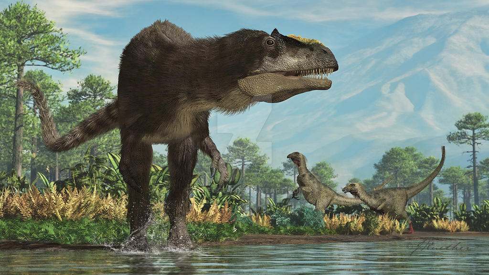
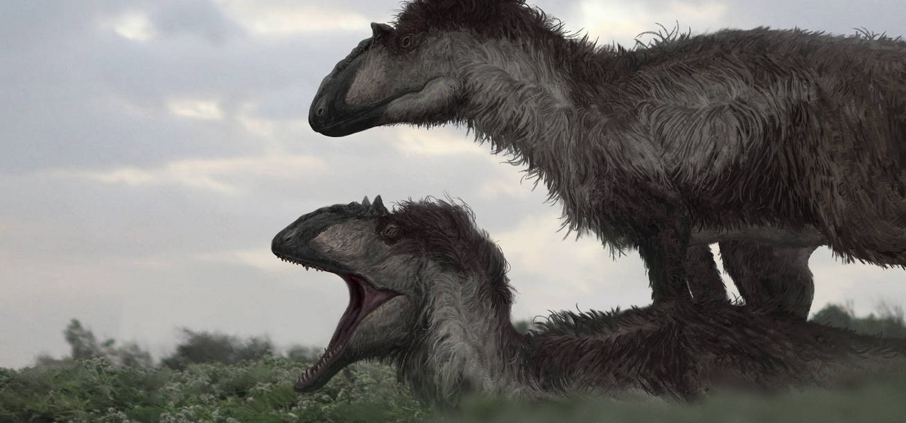
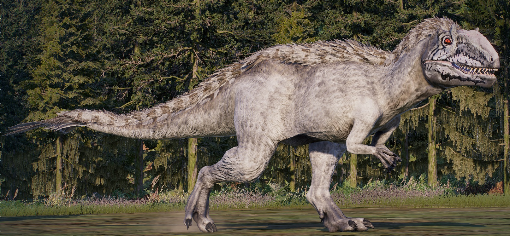
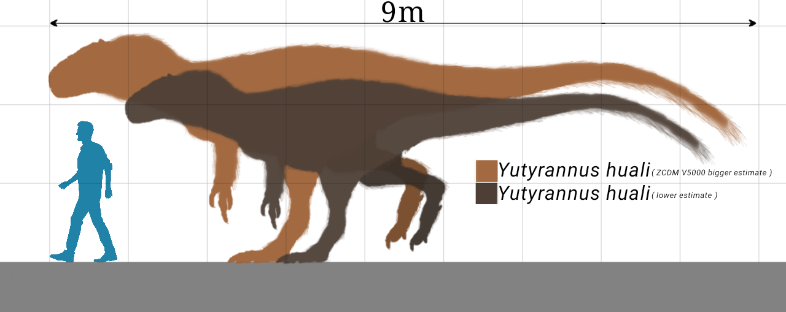
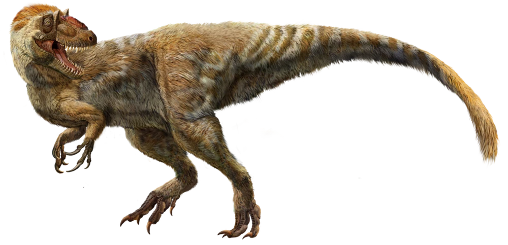
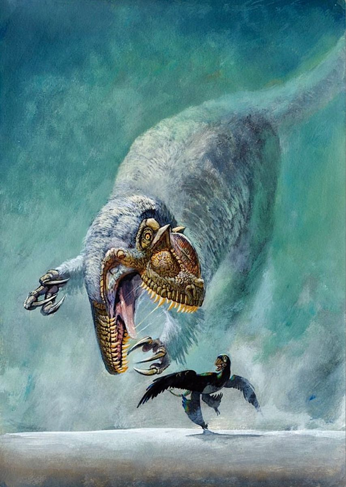
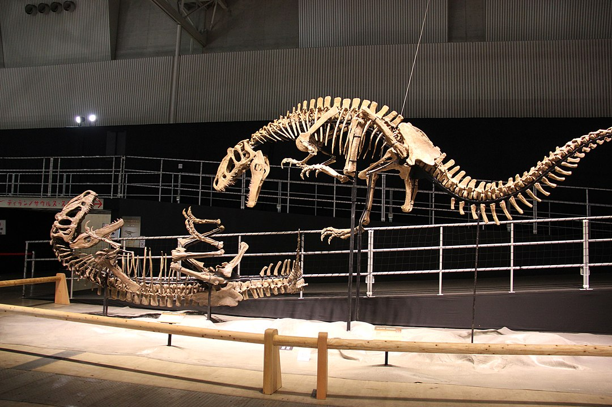
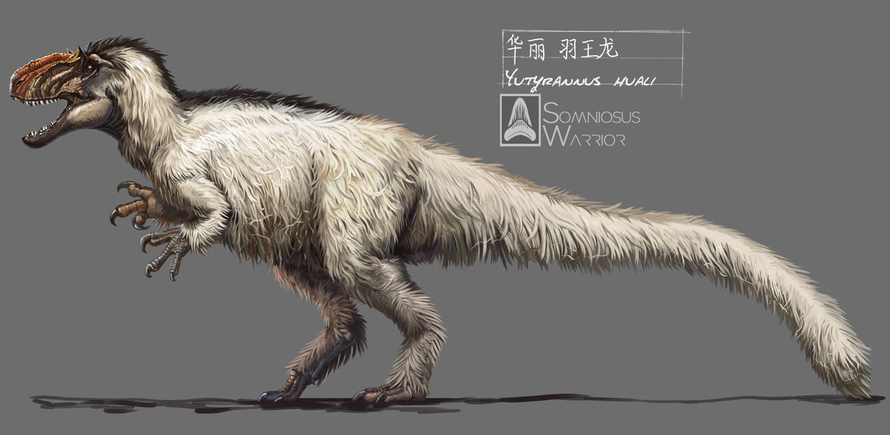
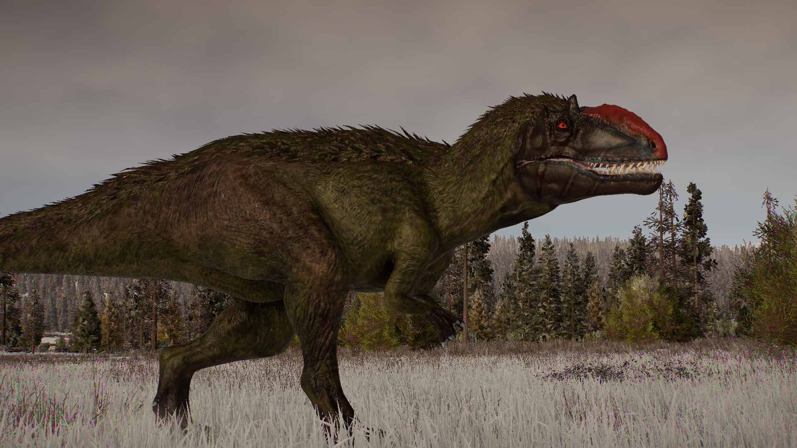

Yutyrannus
Bạo chúa lông vũ Phấn trắng
Tổng quan
Kỷ
Cretaceous
Họ
Tyrannosauroidea
Chi
Yutyrannus
Dài
9 m
Nặng
1.4 tấn
Thức ăn

Yutyrannus là một chi khủng long thuộc siêu họ Tyrannosauroidea gồm một loài duy nhất được biết đến, Yutyrannus huali. Loài này sống vào đầu kỷ Creta. Ba hóa thạch Y. huali - tìm thấy ở lớp đá tỉnh Liêu Ninh - hiện là những mẫu vật khủng long có lông lớn nhất có bằng chứng rõ ràng.
Nguồn: wikipedia.org
Phân bố
Trung Quốc
Thông tin thêm về Yutyrannus
Kỷ nguyên
Yutyrannus là một chi khủng long thuộc nhóm Theropoda, sống cách đây 131-120 triệu năm vào đầu kỷ Phấn trắng.
Phân bố
Loài khủng long bạo chúa có lông vũ này được biết là tìm thấy ở tỉnh Liêu Ninh, Trung Quốc ngày nay.
Tên khoa học
Được đặt tên bởi Xu Xing vào năm 2012. Yutyrannus - "Bạo chúa lông vũ", phát âm là yoo-ti-RAN-us, được đặt tên bằng cách sử dụng từ tiếng Quan Thoại yu có nghĩa là lông vũ và từ tiếng Latinh tyrannos có nghĩa là bạo chúa, ám chỉ thực tế rằng nó là một thành viên có lông vũ của siêu họ Tyrannosauroidea. Tên loài Yutyrannus huali là từ tiếng Quan thoại huáli có nghĩa là đẹp, liên quan đến vẻ đẹp của bộ lông.
Kích thước
Với chiều dài khoảng 9 mét và cân nặng khoảng 1,4 tấn, Yutyrannus được coi là một trong những loài khủng long lớn nhất từng được phát hiện có lông.
Ngoại hình
Yutyrannus được biết đến từ ba mẫu vật và nổi bật là loài khủng long lớn nhất được biết đến với bằng chứng trực tiếp về lông vũ. Lông vũ có dạng sợi, vì vậy trông giống như lông tơ mờ của gà con và dùng để giữ ấm cho khủng long trong thời kỳ lạnh hơn.
Yutyrannus là một kẻ săn mồi hai chân khổng lồ. Hộp sọ của nó có chiều dài ước tính khoảng 90 cm. Mõm có đỉnh đường giữa cao, được hình thành bởi mũi và xương hàm trên và được bao phủ bởi các hốc khí nén lớn. Hậu ổ mắt có mỏm thứ cấp nhỏ, nhô vào góc trên sau của hốc mắt. Yutyrannus có mào mũi đặc biệt có lẽ được dùng để trưng bày.
Chế độ ăn và săn mồi
Yutyrannus được biết là loài ăn thịt rất hung dữ, chúng có thể giết chết bất cứ thứ gì đi qua nó. Chúng có hàm răng lớn và sắc nhọn, cho phép nó săn mồi như các loài khủng long khác. Ngoài ra chúng còn là loài sinh vật duy nhất có thể liên tục phát ra những tiếng gầm lớn gây ra trạng thái hoảng loạn cho kẻ thù, và khi đó, hầu hết các loài sinh vật trong khu vực lân cận sẽ chạy trốn để đảm bảo an toàn.
Khám phá
Yutyrannus được biết đến từ ba mẫu vật hóa thạch gần như hoàn chỉnh (một con trưởng thành, một con chưa trưởng thành và một con chưa trưởng thành) được mua từ một nhà buôn hóa thạch, người đã tuyên bố rằng cả ba mẫu vật đều có nguồn gốc từ một mỏ đá duy nhất tại Batuyingzi ở tỉnh Liêu Ninh, Trung Quốc. Chúng có lẽ đã được tìm thấy trong một lớp của hệ tầng Yixian, khoảng 125 triệu năm tuổi. Các mẫu vật đã được cắt thành từng mảnh có kích thước bằng tấm thảm tắm, hai người mới có thể mang được.
Mẫu gốc, là mẫu vật lớn nhất, bao gồm một bộ xương gần như hoàn chỉnh với hộp sọ, được nén trên một phiến đá, của một cá thể trưởng thành. Hai mẫu vật khác bao gồm một bộ xương của một cá thể nhỏ hơn và một cá thể vị thành niên ước tính trẻ hơn tám tuổi so với mẫu gốc. Các hóa thạch là một phần trong bộ sưu tập của Bảo tàng Khủng long Zhucheng và Bảo tàng Khủng long Erlianhaote nhưng đã được chuẩn bị bởi Viện Cổ sinh vật có xương sống và Cổ sinh vật học, dưới sự hướng dẫn của Xu.
Lông vũ
Mặc dù người ta đã biết từ năm 2004, với mô tả về Dilong, rằng ít nhất một số khủng long bạo chúa sở hữu lông vũ "giai đoạn 1" dạng sợi. Chúng giống như lông tơ của những chú gà con. Theo phân loại lông vũ của Richard Prum, Yutyrannus huali hiện là loài khủng long lớn nhất được biết đến với bằng chứng trực tiếp về lông vũ, nặng gấp 40 lần so với loài giữ kỷ lục trước đó, Beipiaosaurus.
Những chiếc lông dài (đến 20 cm) và có dạng sợi. Do chất lượng bảo quản thấp nên không thể xác định được các sợi đơn giản hay hỗn hợp, rộng hay hẹp. Những chiếc lông bao phủ các bộ phận khác nhau của cơ thể. Với mẫu gốc, chúng có mặt trên xương chậu và bàn chân, một mẫu vật khác có lông trên đuôi hướng về phía sau. Mẫu vật nhỏ nhất có các sợi dài 20 cm trên cổ và lông vũ dài 16 cm ở cánh tay trên. Dựa trên sự phân bố này, lông vũ có thể bao phủ toàn bộ cơ thể và có tác dụng điều hòa nhiệt độ. Ngoài ra, nếu những chiếc lông vũ được giới hạn ở những khu vực mà chúng được tìm thấy thì chúng có thể được dùng làm cấu trúc trưng bày.
Sự tuyệt chủng
Hiện tại, không có thông tin chính thức nào cho biết Yutyrannus đã tuyệt chủng như thế nào. Tuy nhiên, giống như nhiều loài khủng long khác, Yutyrannus đã tuyệt chủng vào cuối kỷ Phấn trắng, khoảng 145 triệu năm trước đây, sau sự kiện tuyệt chủng khủng long lớn nhất trong lịch sử Trái đất - sự kiện tuyệt chủng K-Pg.
